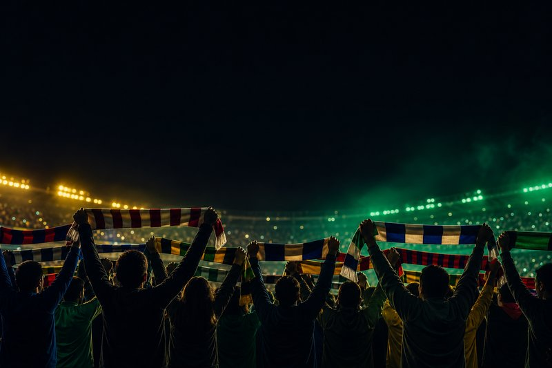
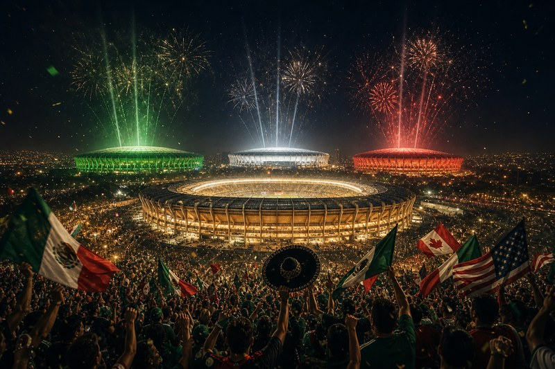

Unofficial fan vote
World Cup 2026 fan poll · winner · favorite · matches
Not affiliated with FIFA
Choose a poll

What fans are arguing about — in the stands, online, and at the bar

Opening weekend
The World Cup opened. What did fans get?
Gilberto Mora at 17, packed Azteca, empty Guadalajara — one weekend, two stories.
Fan story
He had the visa. Miami said no.
Omar Artan — Africa’s top referee, Somalia’s first World Cup official — sent home.
Geopolitics
They sold the tickets. Then the seats vanished.
Tijuana camp, LA diaspora, matchday-only flights — football vs the border.